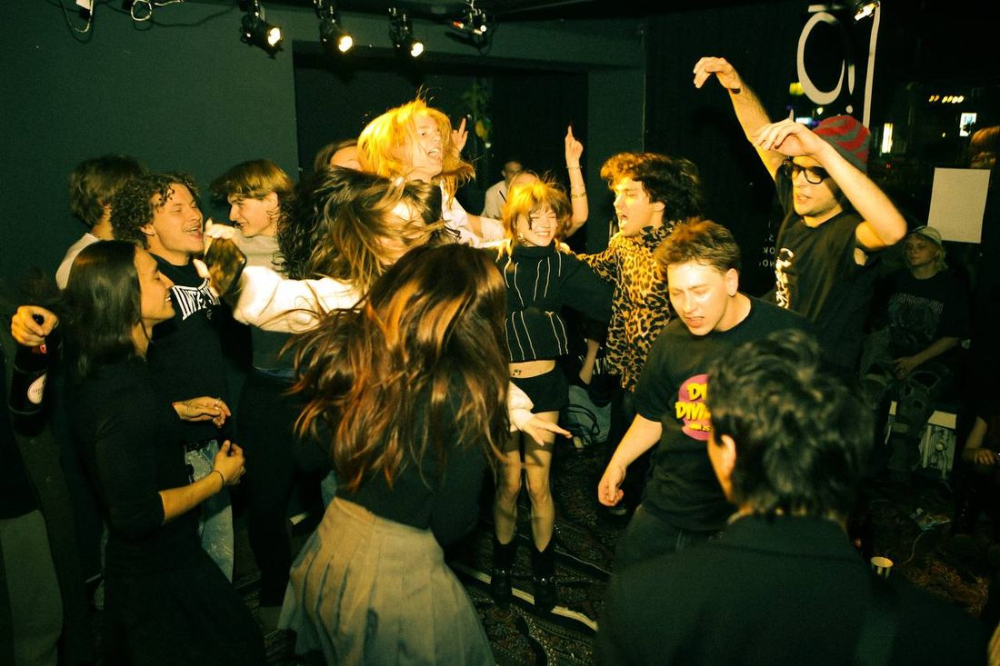
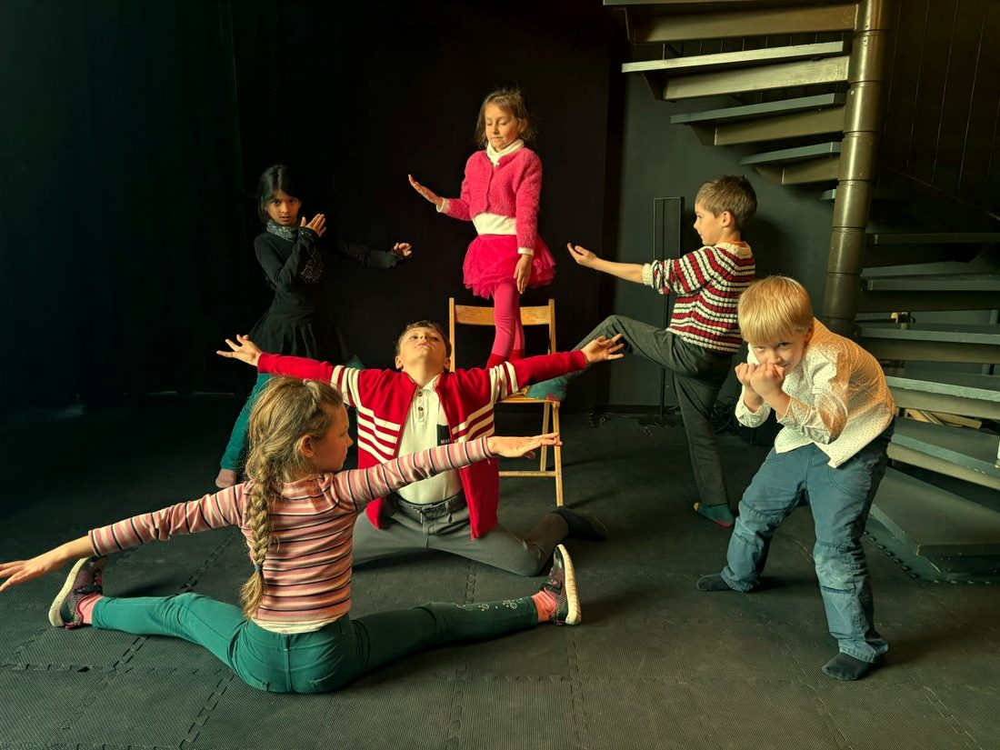
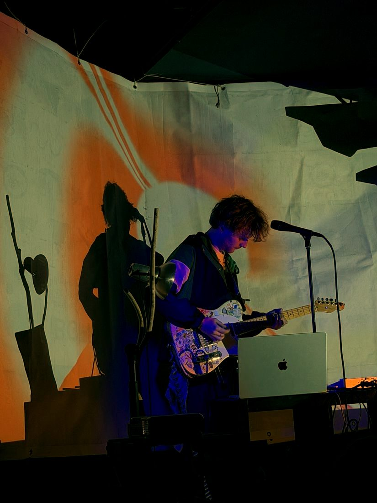
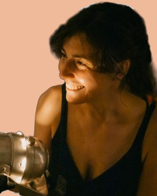
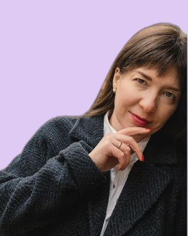

Kulturzentrum OKNO
Brunnenstraße 69 · Berlin-Mitte · U8 Voltastraße
Kurse für Kinder und Erwachsene, Vorträge, Konzerte und Kino in Berlin-Mitte. Unsere Kurse und Veranstaltungen finden auf Russisch statt, deutschsprachige Gruppen eröffnen wir auf Anfrage.
So ist es bei uns
Zur Seite wischen



Programm
19.11DO · 18:30 Kultur und Geschichte der Farbe
Der erste Vortrag der Reihe „Farbe: von der Geschichte zum Empfinden“.
Homer nannte das Meer nie blau. Bei ihm ist es „weinfarben“, ein Wort für Blau gab es in seiner Sprache gar nicht. Im 19. Jahrhundert hielt man das für einen Beweis, dass die alten Griechen Farben nicht unterscheiden konnten. Die Frage ist bis heute offen: Sehen wir Farbe, wie sie ist, oder so, wie man es uns beigebracht hat?
Warum wurde Rot die erste Farbe, der Menschen eine Bedeutung gaben? Warum bekommt Blau in den Sprachen der Welt meist zuletzt einen Namen? Warum war Purpur in Rom und in China die höchste Farbe, aus ganz gegensätzlichen Gründen? Und wie führten Luxusgesetze in Europa zum Schwarz des spanischen Hofes und im Japan der Edo-Zeit zu „48 Braun- und 100 Grautönen“?
Jeden Tag wählen wir Farben: was wir anziehen, was wir kaufen, in welcher Farbe wir die Wände streichen. Kaum eine dieser Entscheidungen gehört ganz uns. Kommt vorbei und findet heraus, wessen Entscheidungen ihr tragt.
Über den Referenten
Alexander Sheremetev ist Kunsthistoriker und Kurator, spezialisiert auf japanische Kunst sowie die Geschichte von Farbe und Kostüm. Seine Promotion an der University of Exeter widmet sich der Semantik der Farbe am japanischen Hof der Heian-Zeit. Er war leitender Berater der Ausstellung „Kimono: Kyoto to Catwalk“ im Victoria and Albert Museum, beriet die Ausstellung „Samurai“ im British Museum und verantwortete den japanischen Teil des Museums für Asiatische Kunst im Humboldt Forum.
Wo und wie
Vor Ort: Kulturzentrum OKNO, Brunnenstraße 69, Berlin (U8 Voltastraße). Online: Livestream für alle, die nicht in Berlin sind, beim Kauf einfach das Online-Ticket wählen. Sprache des Vortrags: Russisch.
21.11SA · 18:30 Filmvortrag von Easy Pieces
26.11DO · 18:30 Das heutige Leben der Farbe
Der zweite Vortrag der Reihe „Farbe: von der Geschichte zum Empfinden“.
Warum kann dieselbe Farbe ganz gegensätzliche Gefühle auslösen? Warum ist Rot nicht nur leidenschaftlich, sondern manchmal zurückhaltend, beruhigt Grün nicht immer und ist Weiß längst nicht immer neutral?
Wir halten Farbe gern für Geschmackssache. Aber wie sehr gehören unsere Vorlieben wirklich uns? Warum werden manche Farben zum Symbol einer Epoche, verschwinden aus der Mode und kehren dann zurück?
Im Vortrag geht es darum, wie Farbe heute lebt und wirkt: um ihre emotionale Wirkung, ihr Zusammenspiel mit Licht, Raum und Textur, um Farbe im Interieur, in der Kleidung und in unserer Umgebung. Und darum, warum Farbe nicht nur etwas ist, das wir sehen, sondern auch etwas, das wir fühlen.
Über die Referentin
Olga Linden ist Stylistin und Interior-Dekorateurin. Seit 2014 arbeitet sie mit Privatkunden, Unternehmen, Künstlern sowie Film- und Modeprojekten, als Stylistin, Kostümbildnerin und Dekorateurin. Seit 2021 lebt und arbeitet sie in Berlin. Im Mittelpunkt ihrer Arbeit steht die genaue Frage: nicht nur, wie etwas aussehen soll, sondern welches Gefühl es erzeugen soll.
Wo und wie
Vor Ort: Kulturzentrum OKNO, Brunnenstraße 69, Berlin (U8 Voltastraße). Online: Livestream für alle, die nicht in Berlin sind, beim Kauf einfach das Online-Ticket wählen. Sprache des Vortrags: Russisch.
04.12FR · 18:30 Wege der Avantgarde
Die Avantgarde entwickelte sich gleichzeitig in Europa und in Russland: ungleichmäßig, unterschiedlich und doch mit einem gemeinsamen Zug. Sie war die neue Vorhut der Kunst, mit neuen Medien und dem Versuch, die akademische Ausbildung und die „Hand des Künstlers“ infrage zu stellen. Künstler reisten, lernten sich kennen, schauten einander über die Schulter. Für die Avantgarde war nichts verboten: Jede Handlung konnte zum Kunstwerk werden.
Die Kunsthistorikerin und Dozentin Nadezhda Voronina folgt den Routen der Avantgarde von Kandinsky bis zum „Karo-Buben“ und „Eselsschwanz“, von russischen Künstlergruppen im Ausland bis zum Streit zwischen Chagall und Malewitsch.
Über die Referentin
Nadezhda Voronina ist Kunsthistorikerin und war Dozentin an der Russischen Akademie der Künste. Sie forschte in Sankt Petersburg und München. In ihrer Dissertation befasste sie sich mit der Jahrhundertwende, den Institutionen der Kunst und der Gruppe russischer Künstler in München.
Wo
OKNO, Brunnenstraße 69 (U8 Voltastraße). Sprache des Vortrags: Russisch.
Tickets für die Vorträge gibt es auf Fienta, der Link steht auch in unserem Instagram-Profil. Neue Termine findet ihr ebenfalls dort. Kino im OKNO machen wir gemeinsam mit dem Filmclub Easy Pieces.
Kurse
Eine Probestunde in jeder Gruppe kostet 30 €. Klickt auf einen Kurs, um mehr zu erfahren. Mehr über unsere Lehrerinnen erzählen wir auf Instagram.
Für Kinder
Small Stories Theater Kids 100 € im Monat
Hier entstehen kleine Geschichten. Die Kinder basteln Puppen, probieren Masken an, lassen Schatten an der Wand lebendig werden und erfinden Märchen, die sie dann selbst spielen. Nebenbei lernen sie, klar und mutig zu sprechen, ihre Stimme zu hören, ihren Körper zu spüren und zu singen.

Leitung: Maria Yasinover, Regisseurin, Schauspielerin und Pädagogin.Bewegung. Sprache. Theater. 100 € im Monat
Hier bereitet Theater nicht auf die Bühne vor, sondern hilft dem Kind zu wachsen. In Spiel, Bewegung und kleinen Szenen lernen die Kinder zuzuhören, klar zu sprechen, ihren Körper zu beherrschen und Freundschaften zu schließen. So werden sie sicherer in neuen Situationen, was besonders in der Schule hilft.
6–7 Jahre, 1 Stunde: Di 17:45 und Sa 11:30.

Leitung: Anastasia Pentiliuk, Theater- und Filmschauspielerin, Master in Psychologie, Mitglied der Deutschen Gesellschaft für Theatertherapie. Seit 2012 in der Theaterpädagogik mit Kindern tätig.Musikwerkstatt 100 € im Monat, 80 € für Kinder der russischen Samstagsschule des BGFF e.V.
Hier beginnt Musik mit Spiel. Schon in der ersten Stunde greifen die Kinder zu echten Instrumenten: kleinen Cajóns, Tamburinen, Maracas, Glöckchen und Xylophonen. Sie lernen, Rhythmus und Stimmung der Musik zu spüren, einander zuzuhören, zu singen und zu improvisieren.
Leitung: Nika, Musikerin, Sängerin und Songwriterin, zertifizierte Musikpädagogin (EMP). Sie steht seit ihrer Kindheit auf der Bühne und weiß: Musik ist vor allem Freiheit und Freude.
Für Erwachsene
Small Stories Theater Lab 120 € im Monat
Ein Studio für alle, die durchatmen und sich auf einen kreativen Prozess einlassen wollen, ohne Erwartungen, ohne Bewertung und ohne Vorkenntnisse. Hier darf man spielen, Neues ausprobieren, in sich hineinhören und jemand anderes sein. Menschen jeden Alters sind willkommen.
Mit Methoden aus Theater und Kunsttherapie finden wir den Schlüssel zu unserem inneren spielenden Kind und zu unserer Kreativität.
Leitung: Maria Yasinover, Regisseurin, Schauspielerin und Pädagogin.
Preise und Rabatte
| Small Stories Theater Kids | 100 € im Monat |
|---|---|
| Bewegung. Sprache. Theater. | 100 € im Monat |
| Musikwerkstatt | 100 € im Monat |
| Small Stories Theater Lab | 120 € im Monat |
| Jede Probestunde | 30 € |
Familienrabatt
Elternteil und Kind: 20 % Rabatt.
Zweites Kind in der Familie: 20 % Rabatt.
Drittes Kind in der Familie: 30 % Rabatt.
Zweiter Kurs für eine Person
Jedes zweite Abo im selben Monat: 20 € günstiger.
Regeln für die Kurse
Teilnahme
Aufsicht
- gilt nur während der Kursstunde, vom Beginn bis zum offiziellen Ende;
- bringt euer Kind bitte pünktlich und holt es direkt nach dem Ende ab: Vor und nach der Stunde gibt es keine Aufsicht;
- im Notfall ruft bitte die Kursleitung an;
- wenn jemand anderes das Kind abholt, sagt bitte vorher Bescheid, damit die Kursleitung weiß, wem sie das Kind übergibt.
Probestunde
Vor dem Kursbeginn könnt ihr eine Probestunde besuchen.
Ferien und Feiertage
Während der Berliner Schulferien und an gesetzlichen Feiertagen finden die Kurse weiter statt. In den Ferien bietet das Kulturzentrum außerdem Kindercamps an, Kursteilnehmer bekommen dafür einen Rabatt.
Fehlstunden
Fehlen aus eigenen Gründen
Eine Rückerstattung oder ein Nachholtermin ist nicht vorgesehen (siehe Erklärung zur Zahlung unten).
Fehlen wegen Krankheit
Einmal im Monat könnt ihr eine verpasste Stunde verschieben. Es gibt drei Möglichkeiten:
- die Stunde an einem anderen Tag in der Gruppe eurer Kursleitung nachholen, wenn ein Platz frei ist;
- die Stunde an einem anderen Tag in einem anderen Studio des Zentrums nachholen, wo Plätze frei sind;
- den Betrag auf den nächsten Monat übertragen: Beim nächsten Abo zahlt ihr eine Stunde weniger.
Zahlung und Kündigung
Die Zahlung erfolgt bis zum 10. jedes Monats
Ihr bezahlt euren Platz in der Gruppe, nicht die einzelnen besuchten Stunden. Der Betrag bleibt gleich, auch wenn ihr einzelne Stunden verpasst oder der Monat Ferien enthält.
Kündigung
- erfolgt schriftlich (per E-Mail, WhatsApp, Telegram oder handschriftlich) bis zum 10. des Monats;
- die Teilnahme endet zum Ende dieses Monats, der laufende Monat wird trotzdem bezahlt;
- ohne schriftliche Kündigung laufen Teilnahme und Zahlung automatisch weiter.
Raummiete
Unseren Saal könnt ihr für Vorträge, Proben, Workshops und kleine Veranstaltungen mieten. Für gemeinnützige und kommerzielle Veranstaltungen gelten unterschiedliche Konditionen.
Schreibt uns auf Instagram, per E-Mail an okno@bgff.de oder auf Telegram, und wir schicken euch die Konditionen.
So findet ihr uns
Anmeldung und Fragen
Instagram @okno_kultur
Telegram @okno_kultur_admin
okno@bgff.de
Schreibt uns eine Direktnachricht oder eine E-Mail.